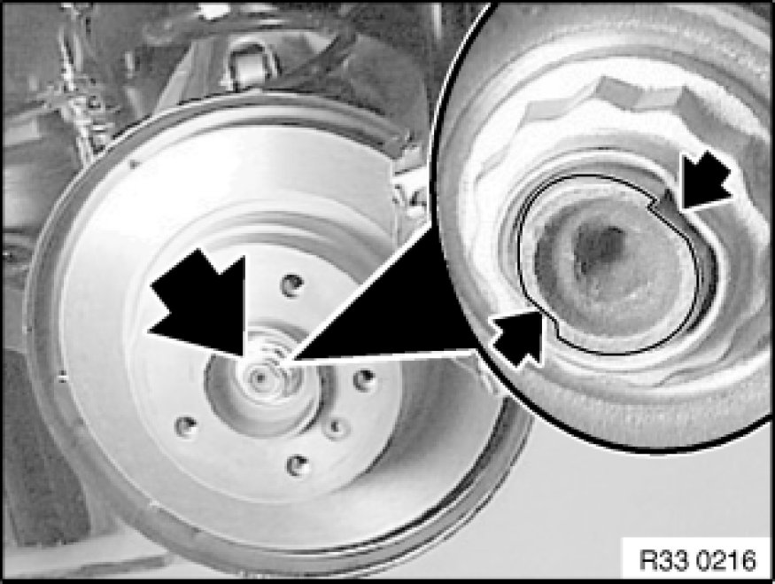

Removing and Installing/Replacing Right Output Shaft
33 21 002 - Removing and installing / replacing right output shaft

Remove rear wheel Removing or Installing Front or Rear Wheel.
Important!
Expand turning lock sufficiently to avoid damaging thread when releasing collar nut.
Release collar nut, activate handbrake for this purpose.
Installation Note:
Replace collar nut, oil collar nut/wheel bearing contact surface lightly and tighten down.
No oil permitted on thread of shaft journal or collar nut.
Tightening torque 33 41 3AZ [1][2]Mechanical Specifications.
Secure collar nut by positive peening on flat areas of output shaft.

Remove stabilizer on rear axle carrier Removing and Installing/Replacing Rear Stabilizer.
Release bolts and remove with washers (1).
Press output shaft off drive flange using a suitable tool; if necessary, raise trailing arm with workshop jack approx. 20 mm.
Installation Note:
Before installing output shaft, make sure that drive flange is fully engaged in rear differential.
Replace bolts and washers (1).
Tightening torque 33 21 1AZ 33 21 Output Shaft (Rear).
Important!
Risk of damage!
Do not drive output shaft out of drive flange with an impact tool.
Press output shaft out of drive flange Pressing Output Shaft Out of Drive Flange and Drawing in (Output Shaft Removed From Rear Differential) and remove towards center of vehicle.

After installation:
- Check that output shaft is correctly seated in rear differential.